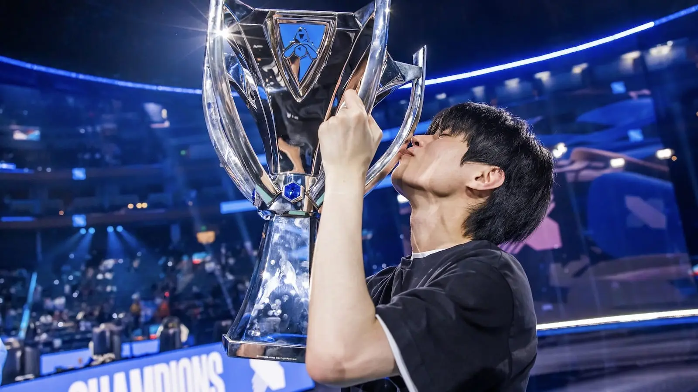

Information générale

L'Esport League of Legends se dispute de janvier à septembre partout dans le monde.
Toutes les équipes n'ont qu'un seul but pendant les phases régionales : se qualifier au Championnat du Monde (World) ! Pour cela, ils disputent un tournoi inter-saison, le MSI, qui qualifiera le gagnant de ce tournoi. Par la suite, seul les meilleurs pourront se qualifier aux Worlds et espérer remporter le trophée le plus préstigieux pour un joueur League of Legends, les Worlds.